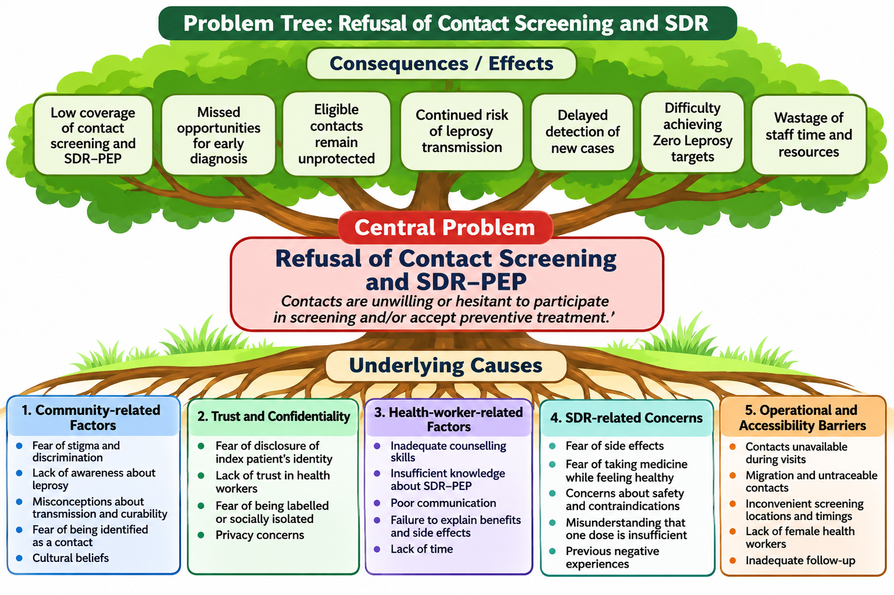

Interior Sindh: Data Evaluation (July 2025 – June 2026)
Comprehensive contact screening, SDR uptake and suspect detection across rural districts
Interior Sindh Annual Trends (2025 vs 2026)
Interior Sindh: Household vs Social Acceptance
Interior Sindh Data: July 2025 - June 2026 (Exact Slide 2 Table)
| Year | Index Cases | Total Screened | Household Contacts (42%) | Neighbor / Social Contacts (58%) | Prev SDR | ||||||
|---|---|---|---|---|---|---|---|---|---|---|---|
| Screened | Refusal | SDR | Lep Suspect | Screened | Refusal | SDR | Lep Suspect | ||||
| 2025 | 158 | 6,903 | 2,644 | 18 | 2,403 | 20 | 4,259 | 43 | 3,787 | 16 | 17 |
| 2026 | 158 | 5,826 | 2,728 | 07 | 2,418 | 21 | 3,098 | 14 | 2,882 | 14 | 165 |
| Total | 316 | 12,729 | 5,372 (42%) | 25 (0.46%) | 4,821 (89.7%) | 41 (0.76%) | 7,357 (57.8%) | 57 (0.77%) | 6,669 (90.6%) | 30 (0.40%) | 182 (1.4%) |
Karachi Data: July 2025 – June 2026
Analysis of high-volume screening and significant urban refusal dynamics
Karachi Annual Shifts (2025 vs 2026)
Karachi Household vs Social Acceptance
Karachi Data: July 2025 - June 2026 (Exact Slide 3 Table)
| Year | Index Cases | Total Screened | Household Contacts (46%) | Neighbor / Social Contacts (54%) | Prev SDR | ||||||
|---|---|---|---|---|---|---|---|---|---|---|---|
| Screened | Refusal | SDR | Lep Suspect | Screened | Refusal | SDR | Lep Suspect | ||||
| 2025 | 751 | 12,936 | 7,388 | 2,590 | 2,953 | 12 | 5,548 | 1,788 | 2,816 | 05 | 1,230 |
| 2026 | 658 | 16,106 | 5,986 | 1,120 | 2,729 | 14 | 10,120 | 2,205 | 4,553 | 07 | 1,763 |
| Total | 1,409 | 29,042 | 13,374 (46%) | 3,710 (27%) | 5,682 (42%) | 26 (0.19%) | 15,668 (54%) | 3,993 (25%) | 7,369 (47%) | 12 (0.07%) | 2,993 (10%) |
Karachi vs Interior Sindh: Comparative Analysis
Unpacking the 45-fold refusal disparity and structural differences between urban and rural settings
Karachi vs Interior Sindh (Slide 4 Chart 1)
Combined Sindh Outcome Composition
Why the Huge Urban-Rural Gap? (Field Insights)
🏙️ Karachi Urban Complexities
- Heightened Stigma & Anonymity: Fear that neighbours or colleagues identifying a contact will result in workplace termination or social isolation.
- Rapid Mobility & Missed Visits: High daily commuting, factory shifts, and frequent migration mean contacts are unavailable during standard working hours.
- Healthy Perception Barrier: "I feel healthy—why do I need preventive medicine?" is most prevalent in educated or fast-paced urban populations.
- Lower Baseline Rapport: Shorter health-worker visit times leading to transactional rather than relational counselling.
🌿 Interior Sindh Facilitators
- Enduring Respect for MALC: Decades of trust built by Dr. Ruth Pfau and legacy leprosy teams established strong community reverence.
- Community & Elder Endorsement: Village elders and family patriarchs participate directly in health decision-making.
- Dedicated Home Visits: Field workers spend considerable time explaining benefits, answering questions, and building confidence.
- Active Case Awareness: Higher direct exposure to endemic leprosy cases increases perceived risk and willingness to take prophylaxis.
1. What makes SDR difficult to accept?
Root barriers identified by MALC field teams across Sindh
Contacts without symptoms find it counterintuitive to swallow prophylactic medication. Many view medicine strictly as curative rather than protective.
Anxieties surrounding red-orange urine discoloration, nausea, drug-drug interactions, or potential harm to pregnancy and chronic medical conditions.
Index patients fear community backlash if health workers visit their home; contacts fear guilt by association if seen accepting medicine.
Non-household contacts often do not perceive themselves to be at risk and are reluctant to engage in health screenings on the street or in public.
Contacts are frequently away during daytime mobile visits; migrant labour movements in industrial zones result in untraceable contacts.
Rushed field schedules prevent in-depth dialogues. When explanations are hurried or technical, contacts naturally default to refusal.
2. Practical actions for MALC teams
Six core operational and clinical commitments for all field centres
Counsel clearly
Explain prevention, benefits, possible side effects (e.g. harmless urine coloration) and when to seek help.
Clear, non-technical verbal & visual explanationProtect privacy
Never disclose the index patient's diagnosis without explicit authorization. Offer screening under general skin-health checks.
Strict confidentiality safeguardsRespect choice
Obtain informed voluntary consent; do not pressure contacts who decline. Never coerce or shame individuals.
Patient dignity & voluntary participationPlan follow-up
Arrange a suitable revisit for unavailable contacts; avoid repeated low-priority revisits that exhaust team resources.
Structured revisit timetablesScreen safely
Trained staff assess eligibility (exclude TB, liver disease, pregnancy, allergy) and strictly follow current national/WHO guidance.
Clinical safety & contraindication screeningRecord accurately
Document counselling, eligibility, consent/refusal, administration and clinical outcome in standardized field registers.
High-fidelity surveillance recordsAny person showing clinical signs of leprosy (skin patches, hypopigmentation, numbness, thickened nerves) must be referred immediately for MDT treatment, NOT given SDR chemoprophylaxis.
3. SDR implementation pathway
Standardized clinical algorithm from contact identification to post-administration surveillance
Step 1: Identify and counsel close contacts
With index patient consent, compile a roster of household contacts (shared living quarters >3 months) and close social/neighbour contacts. Introduce preventive health counselling with complete privacy.
Step 2: Assess eligibility and safety
Conduct thorough physical skin inspection and safety screening against WHO/national exclusion criteria:
Step 3: Decision Node: Eligible and Consents?
Evaluate the response and route along the appropriate pathway:
Administer weight-based Single-Dose Rifampicin under direct observation:
- Adults (≥35 kg): 600 mg
- Children (20-34 kg): 450 mg
- Children (10-19 kg): 300 mg
Respect decision immediately; do not administer medication:
- If symptomatic: Refer for full leprosy diagnosis
- If contraindicated: Document medical reason
- If declined: Document refusal (record reason only if voluntarily shared)
Contact not present during mobile visit:
- Record in revisit ledger
- Agree on a scheduled evening/weekend revisit
- Provide satellite clinic voucher if preferred
Step 4: Document outcome
Record all metrics in MALC register: eligibility • consent/refusal • SDR given • follow-up required.
Step 5: Review acceptance, coverage and reasons for refusal
Conduct monthly center-level audits to evaluate coverage trends and refine community counselling approaches.
4. What should centers monitor?
Key surveillance indicators to assess program quality and community acceptance
Measures field outreach completeness. Target: >85% of eligible contacts identified during case investigations.
Measures counselling effectiveness. Benchmarks: Interior Sindh achieved 90.3%; Karachi urban target is 75%+.
Record refusal without judgment. Inquire and record the underlying reason only if voluntarily shared by the contact.
Unavailable, untraceable or migrated contacts tracked separately to distinguish true refusals from operational absence.
Ensure 100% documentation of pre-dose exclusion screening, batch numbers, weight-based dosing, and any reported adverse events.
Compare coverage and acceptance across household and social contacts, gender, and age without compromising patient privacy.
Problem Tree: Refusal of Contact Screening and SDR-PEP
Comprehensive root cause analysis: from community perceptions to operational bottlenecks

Canopy: Consequences / Effects of Screening & SDR Refusal
Roots: The 5 Underlying Cause Clusters
- Fear of stigma and social discrimination
- Lack of general awareness about leprosy
- Misconceptions regarding transmission & curability
- Fear of being identified as a contact
- Prevailing cultural and fatalistic beliefs
- Fear of disclosure of index patient's identity
- Lack of familiar trust in visiting health workers
- Fear of being labelled or socially isolated
- Privacy concerns during home visits
- Inadequate interpersonal counselling skills
- Insufficient technical knowledge of SDR-PEP
- Failure to explain benefits and harmless side effects
- Severe time constraints during busy field rounds
- Fear of side effects (urine discoloration, nausea)
- Reluctance to take pills while feeling healthy
- Safety concerns with concurrent medications
- Misconception that a single dose cannot protect
- Contacts unavailable during daytime visits
- Urban migration and untraceable residents
- Inconvenient screening timings & locations
- Shortage of female health workers for home visits
5. Workshop Action Plan & Commitments Matrix
Workshop Objective: Agree on practical, stigma-sensitive steps to improve informed SDR acceptance and safe delivery.
What-If Refusal Reduction & Acceptance Simulator
Model the population health impact of closing the Karachi refusal gap